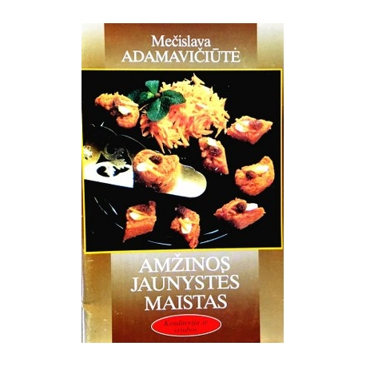

Welcome to tinkamos mitybos maistas
Tinkama mityba - tinkamos mitybos esmė ir pagrindas - Sveikata - 2020
2020.10.30 03:10Namai ir laisvalaikis Dieta ir mityba Sveikata Grožis Sodas Vaikai Mada Psichologija Ryšys Turizmas Karjera Sportas ir joga Vestuvės Pagrindinis Namai ir laisvalaikis Dieta ir mityba Sveikata Grožis Sodas Vaikai Sveikata
Tinkamos mitybos pagrindai jūsų sveikatai ir grožiui
Norite būti gražus ir sveikas, jums reikia išmokti tinkamos mitybos pagrindus. Jei nežiūrite savo mitybos, valgykite sumuštinius, konservuotus maisto produktus ir pusryčių grūdus, ateityje gali atsirasti rimtų sveikatos ir virškinimo komplikacijų. Nesveikos mitybos metu organizme kaupiasi dideli riebalų ir cukraus kiekiai, kurie ilgainiui sukelia dažniausiai pasitaikančias 21-ojo amžiaus ligas - aterosklerozę ir diabetą. Skaityti: Kas yra simptomai, rodantys diabetą? Šių produktų perteklius, daugelis jų yra deponuojami celiulito ir riebalų sluoksniuose pilvo, šlaunų ir sėdmenų. Būtinai sužinokite, kaip padaryti tinkamą sveiką meniu, išmokti tinkamos mitybos principus ir sveikos mitybos pagrindus.
Tinkama mityba - sveikos mitybos esmė ir pagrindas.
Valgykite mažus valgius 7 kartus per dieną. Tai ne ištęs skrandį, o ne per daug, bet tuo metu būsite pilnas ir laimingas visą dieną. Vakarienė turi būti lengva ir ne vėliau kaip 20:00. . Pagrindinis maistas yra pusryčiai, pietūs ir popietės arbata. Pertrauka tarp pusryčių ir vakarienės turėtų būti 12 valandų. Vaisiai ir daržovės turėtų būti mažiausiai 40% pagrindinis racionas. Juose yra būtini vitaminai ir mineralai, kurių reikia žmogaus organizmui. Įtraukti į grūdų ir grūdų dietinius produktus. Įrodyta, kad tokie produktai veikia kaip absorbentai ir sugeba išvalyti kūną. Valgykite riešutus, sėklas ir pupeles. Juose yra nesočiųjų rūgščių, maisto skaidulų ir kalio. Riešutai valgomi neapdoroti be druskos. Valgykite daugiau pieno produktų. Juose yra laktobacilių, kurios atkuria sveiką žarnyno mikroflorą. Baltymai užklijuoja mėsą ir žuvį. Tą dieną kūnui reikia tik 60 g baltymų. Gerkite ne mažiau kaip 2 litrus vandens kiekvieną dieną Vanduo yra tikras grožio šaltinis. Stebėkite rūgšties ir bazės balansą (PH) . Jis yra atsakingas už biocheminius procesus organizme. Šią pusiausvyrą lemia ląstelių prisotinimas deguonimi. Dėl rūgšties ir bazės pusiausvyros pažeidimo atsiranda deguonies sugėrimas ir imunitetas. 80% dietos turėtų būti šarminiai maisto produktai. Tai vaisiai, daržovės, jogurtai, pienas ir kai kurių rūšių riešutai. Naudingi produktai didelis kalis : džiovinti abrikosai, slyvos, vynuogės, abrikosai, persikai, razinos ir bulvės. Pakeiskite kalorijų turinčius maisto produktus su mažo kaloringumo maisto produktais. Kalorijų skaičius per dieną neturėtų viršyti 2000 kcal. Pašalinkite nuo maisto produktų, kuriuose yra konservantų ir daug riebalų. Norėdami tai padaryti, išnagrinėkite produktų sudėtį. Pamirškite apie patogumus . Jie rimtai sugadina grožį ir sveikatą. Pusryčiai patiekiami košė . Juose yra daug skaidulų ir gliukozės, todėl ilgą laiką galite prisotinti kūną. Grūdams galite pridėti vaisių. Ribokite valgyti keptus maisto produktus pakeisdami juos keptais arba garais. Pašalinkite sodą iš dietos . Vietoj to, išgerkite natūralius vaisių gėrimus, vaisių gėrimus, arbatas ir sultis. Nustokite valgyti baltą duoną ir pyragaičiai. Vietoj baltos duonos valgykite visą grūdų duoną.Mitybos lentelė
Kaip padaryti tinkamą mitybą - žingsnis po žingsnio
Meniu nustatymas tam tikrą laiką padės subalansuoti mitybą, skaičiuoti kalorijas ir praturtinti organizmą su būtinomis medžiagomis.
Veiksmingos dietos paruošimo žingsnis po žingsnio
Padarykite kasdienį valgio planą. . Pradėkite dieną su pusryčiais, įvertindami kalorijų kiekį. Į pusryčius įtraukti daugiau angliavandenių (2/3 dienos kiekio), baltymų (1/3) ir riebalų (1/5). Pietums turi būti pirmasis ir antrasis kursai. Vakarienė turėtų būti mažai kalorijų. . Jei pagrindiniai patiekalai yra užkandžiai, įtraukite juos į savo schemą. Užsirašykite visą savo meniu. Dieta turėtų būti subalansuota ir sustiprinta. Įjungta pusryčiai Valgykite grūdų košę, pridėdami šviežių vaisių arba džiovintų vaisių. Galite virti varškės puodus, sūrio pyragus arba tiesiog valgyti varškės. Jei jums patinka plakta kiaušiniai, pakeiskite jį garo omeliu. Įjungta antras pusryčiai Galite valgyti porą vaisių, riešutų arba džiovintų vaisių. Pietūs turi būti patenkintas ir pilnas. Jame turi būti sriuba, šviežių daržovių arba vaisių salotos, žuvis arba mėsa su šoniniu patiekalu. Pakaitiniai mėsos ir žuvies patiekalai. Kaip šalutinis patiekalas yra geriau valgyti virtus arba virtus daržoves, taip pat ryžius. Kartą per savaitę galite sau leisti bulvių košė arba makaronai. Įjungta vakarienė jūs negalite valgyti, todėl atsisakykite šoninio patiekalo. Valgykite garo pyragaičius, virtas daržoves, žuvį ar vištieną. Galite padaryti daržovių salotas. Prieš miegą Galite valgyti natūralaus jogurto arba gerti fermentuotą pieno gėrimą. Suplanuokite valgį iki valandos. Valgykite tuo pačiu metu, bandydami laikytis režimo.Mitybos knygos gali padėti jums organizuoti savo mitybą.
Yra daug knygų apie mitybą, kuri leis jums tinkamai organizuoti savo mitybą.
Adiraja das Vedinis kulinarinis menas
Knyga yra įdomi tuo, kad ji turi tikrą turą tinkamos mitybos. Jame yra daug nuotraukų ir kompetentingų paaiškinimų. Autorius žinojo, ką apie tai rašo.
A.Y. Gubergrits Medicininė mityba
A. Ya Gubergrits yra vienas iš ryškiausių Kijevo vidinės medicinos mokyklos atstovų. Knygoje apie tinkamą mitybą ji ypatingą dėmesį skiria mitybos, produktų mitybos ir biologinės vertės pagrindams, taip pat numato dietos kūrimo principus. Gydytojas pateikia išsamius argumentus apie nevalgius ir mitybą.
Vydrevich G.S. „Dieta be dietos“
Knyga pasakoja apie druskos pavojus. Maža dietos priežiūra yra daugelio terapinių dietų pagrindas. Knygoje pateikiami daugelio druskos neturinčių dietų ir jų principų pavyzdžiai. Skaitytojai galės rasti dietą pagal jų skonį ir sveikatą.
Vydrevich G.S. „50 sveikos mitybos taisyklių“
Knygoje pateikiami pagrindiniai sveikos ir tinkamos mitybos principai. Mityba padeda išsaugoti jaunimą, sveikatą ir grožį. Taip pat čia rasite skanių ir sveikų patiekalų receptus, kuriuos galite gaminti namuose.
Bragg Paulas „Pasninkavimo stebuklas“
Čia yra teisingi pasninkavimo principai, kurie padeda išvalyti toksinus ir pašalinti toksinus. Pasninkaujant galite išlaikyti savo širdį sveiką ir savo kūną. Bragg Paulius sako, kad, laikydamiesi tinkamo bado, galite gyventi iki 120 metų ir daugiau.
Brežnevas V. Kremliaus dieta - salotos, užkandžiai, desertai
Kremliaus dieta padėjo daugeliui įžymybių, diplomatų ir politikų prarasti svorio. Šiuo metu šią dietą galima naudoti ir paprastus žmones. Su savo pagalba jūs galite gauti savo svajonių figūrą, išmesti keletą kilogramų. Knygoje Brežnevas aprašomi pagrindiniai principai, kaip laikytis dietos, turi daug salotų, užkandžių ir desertų receptų.
Blumenthal Heston Kulinarijos ar molekulinės gastronomijos mokslas
Šioje knygoje šiuolaikiniai virėjai siūlo paprastus sveikos mitybos receptus. Jie pasižymi neįprasta virimo technologija, tačiau valgiai gali būti ruošiami namuose.
Tinkama mityba - grožio ir sveikatos garantija . Nedaugelis žmonių gali pasigirti puikia sveikata, valgyti mėsainius ir koksą, todėl žiūrėti savo mitybą ir tu laimingai gyvens!
Žiūrėti vaizdo įrašą: Atsakymai į tai kaip numesti svorio? Kaip sudeginti daugiau riebalų? (Spalio Mėn 2020).
Įdomios Straipsniai
Madingi krepšiai 2016 m. Pavasarį - tendencijos deriniai
October 30,2020Šarlotė su vyšnių - 2 virimo metodais
October 30,2020Avialinijos ir lojalumo programos iš oro linijų - ar verta bilietų?
October 30,2020Rekomenduojama
Krekingo slapukai
Dieta ir mitybaRidikėliai - sodinimas ir pasėlių priežiūra
SodasKokie moteriškų megztinių modeliai žiemai yra svarbūs 2019 m.?
MadaPopuliarios Temos, 2020
Artritas - priežastys, simptomai ir gydymas
Sveikata15 profesijų migracijai užsienyje - kokios profesijos yra paklausios užsienyje?
KarjeraKaip pasirinkti mandarinus - saldus ir be sėklų
Dieta ir mitybaĮspūdingiausi „Teen Choice“ apdovanojimai 2018 m
MadaKvėpavimo gimnastika nėščioms moterims
Vaikai Copyright 2020 \ Moterų Laimė Ir Gerovė Žurnalas \ Tinkamos mitybos pagrindai jūsų sveikatai ir grožiui